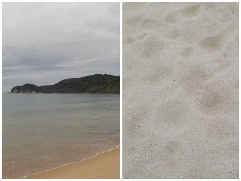
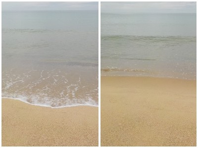

鳴き砂で有名な砂浜を歩きました。
更新日 : 2026/09/27

前日が雨で今日も曇り空です。砂が鳴かないのは分かっていますが、観光で見て歩きました。
曇ってるけどいい景色です。砂もキレイ。今日は人も少なく、のんびりリラックスして海が見れました。
小さい透明っぽいカニが、素早く歩いてるのを見るのも楽しかったです。

潮の満ち引きが見てて気持ち良かったです。曇り空でもこんなにキレイ。シーズンオフで空いてる期間に見に行くのがオススメだなと思いました。